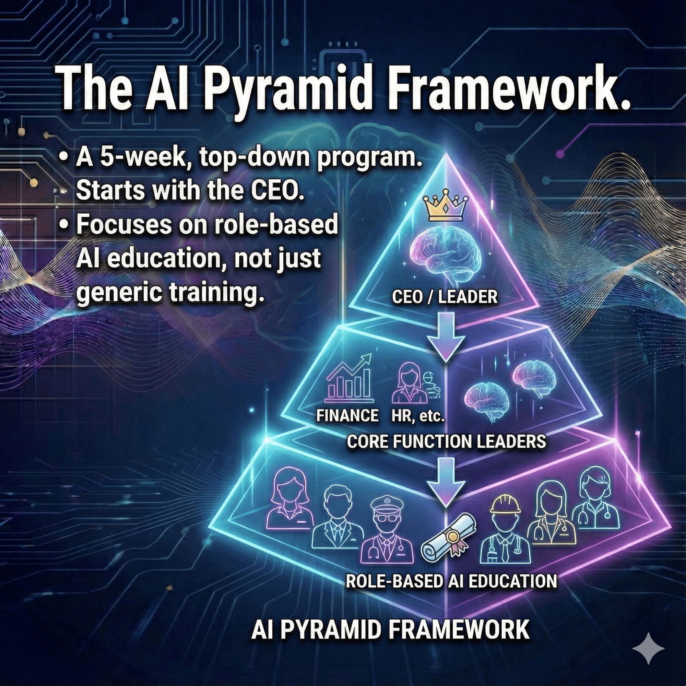
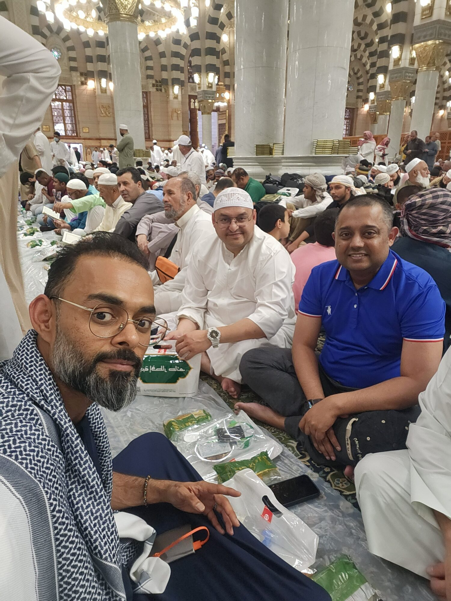

Chapter Seven
The Pyramid — A Framework for Everything
The Signature Methodology
"Cultural amplification over transformation. If a framework can't guide a friend, it won't guide a Fortune 500."

The Pyramid Framework did not start in a consulting engagement. It started with a phone call from a close friend who had just been promoted to a leadership role in a global aviation company and was drowning. He had the title. He had the team. What he did not have was a roadmap for translating corporate strategy into operational reality without losing his people along the way.
I sketched the first version of the Pyramid on the back of a notebook during that call. Three tiers: Executive, Functional, Operational. Each tier with its own language, its own concerns, its own definition of success. The insight was simple but powerful: transformation fails not because the strategy is wrong, but because it is communicated in a single language to an audience that speaks three.
The Three-Tier Architecture
At the Executive tier, the language is strategic: vision, market position, competitive advantage, ROI. At the Functional tier, the language is operational: processes, timelines, resource allocation, team capability. At the Operational tier, the language is practical: daily tasks, immediate deliverables, individual performance, job security.
Most transformation initiatives speak exclusively in Executive language and expect all three tiers to translate on their own. They don't. The result is the industry's widely reported failure rate in AI integration and digital transformation. The Pyramid Framework addresses this by requiring deliberate translation at each tier, with cultural amplification — not transformation — as the operating principle.
90%+ Adoption Rates
The results speak with unusual clarity. Against a low industry-standard adoption baseline, the Pyramid Framework consistently achieves far higher adoption in Telecom, AI, and Fintech deployments where cultural translation was applied at all three tiers, with strong first-year ROI. These are not theoretical projections — they are measured outcomes across implementations in Oman and the GCC.
The reason for this performance is not complexity. It is the opposite. The Pyramid works because it respects the reality of how organizations actually function: as multi-layered systems where each layer has legitimate concerns that must be addressed in its own terms — the operational team is convinced by what AI does for a Wednesday afternoon, not by a board presentation.
The Personal Test

I hold every framework to a personal test: Can it guide a friend through a career crisis? If the answer is no — if the framework only works in a corporate context — then it is incomplete. My friend in aviation used the Pyramid to align his teams, elevate vendor management standards, and secure measurable results within his first year. My nephew used it to distinguish himself in a graduate induction program with fifty peers. If a framework can do both, it is ready for a Fortune 500.
"Theory becomes reality only when we dare to act on it."
— Zeeshan Sabri